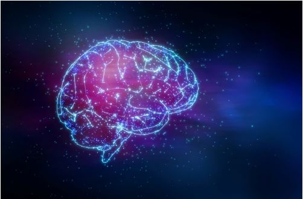
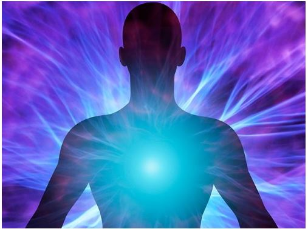

Textos interessantes sobre assuntos dos quais ninguém quer saber
Por Igor Buess - 11/11/2019
Em algum ponto da vida de todo ser humano curioso surge esse questionamento. Há duas respostas para essa pergunta e dependendo das fontes são muito diferentes. Quero apenas mostra-las para reflexão.
A ciência diz que o você é resultado de milhões de conexões dentro de um cérebro físico e todas elas são criadas de acordo com as experiências recebidas através dos seus cinco sentidos durante a vida (conhecido como ego). Não há nada antes do nascimento e depois da morte, começamos a existir aleatoriamente e no momento da parada do funcionamento do corpo físico, não há mais nada, toda consciência já não existe mais.
Sob o ponto de vista religioso você é um espírito que habita um corpo físico temporariamente e o cérebro é apenas um mero controlador das funções vitais e motoras do corpo, ou seja. não agindo como um gerador de livre arbítrio. Existe consciência antes e depois da vida física, e esta é como um passageiro em um carro.
Me incomoda bastante pensar que a primeira hipótese seja verdadeira. Isto significaria que nossa existência é frugal e temporária, quase como se não tivesse sentido em existir. Nesse caso faria sentido uma existência rasa baseada na satisfação de extremos sensoriais.
Entretanto, tenho pouca fé que esta hipótese seja verdadeira pelo simples fato que a ciência até hoje foi incapaz de explicar quando a química se torna biologia. Isto é, são conhecidos todos os componentes químicos necessários para a sopa primordial da vida, mas não se consegue descobrir a faísca final que torna esta sopa viva. A única explicação lógica (e até cientificamente sensata) para não encontrarem esta faísca que falta é que esta não é algo físico ou químico, e sim algo não manipulável pelo mundo físico, ou seja, o espírito.
Não quero me aprofundar na explicação religiosa, pois esta se baseia demais em "fé" ou simplesmente acreditar, e isto pode tornar tudo muito confuso dependendo de qual religião tenta explicar esse fenômeno. Creio que o caminho da descoberta de o que somos de verdade é sim o científico, porém considerando também a existência de um lado "místico" inalcançável para as ferramentas humanas atuais.
Este post não oferece respostas prontas e explicações aprofundadas, pois minha intenção é apenas cativar o leitor e faze-lo pesquisar mais profundamente sobre estes temas.